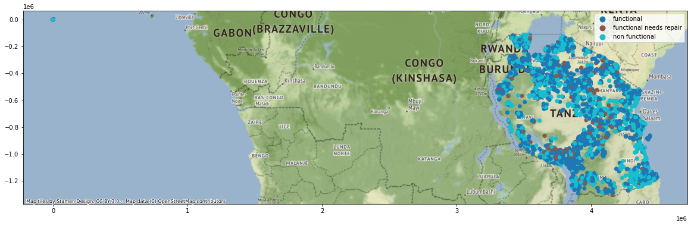

!pip install geopandas > /dev/null
!pip install folium matplotlib mapclassify > /dev/null
!pip install contextily > /dev/nullThis is a competition from DrivenData that I’ve wanted to enter for some time - it’s a geospatial problem, and it’s related to water, and it’s related to development - this is a win-win-win from my perspective.
Of course, the first attempt is never actually going to be about winning, especially in an established competition like this one. Here I’ll just try to figure out what data is available to us and what API the competition requires (what is the input to our pipeline? what does the output look like?) Sometimes I’ll even use randomly generated mock predictions to validate the API - but in this case, I’ll actually put together a simple baseline model.
First things first, what’s the objective here?
Your goal is to predict the operating condition of a waterpoint for each record in the dataset.
So we have some working wells, and some broken wells, and it’s our job to figure out which is which.
Next, some imports to make and some files to open:
import pandas as pd
import geopandas as gpdtrain_labels = pd.read_csv("/content/drive/MyDrive/data_mining_water_table/0bf8bc6e-30d0-4c50-956a-603fc693d966.csv")
train_features = pd.read_csv("/content/drive/MyDrive/data_mining_water_table/4910797b-ee55-40a7-8668-10efd5c1b960.csv")
test_features = pd.read_csv("/content/drive/MyDrive/data_mining_water_table/702ddfc5-68cd-4d1d-a0de-f5f566f76d91.csv")Labels
Looking at the label values:
train_labels.status_group.value_counts()functional 32259
non functional 22824
functional needs repair 4317
Name: status_group, dtype: int64So this is a multi-class classification problem! I’ll leave that be for the time being, but I think there may be a way around that particular hitch.
The class balance looks alright between functional and non functional, but functional needs repair is super underrepresented.
Only one more column to check here - it may say it’s a primary key but I’ve been burned too many times:
train_labels.id.is_uniqueTrueFeatures
At first glance I prefer to look at the .info() method output on the dataframe. I find it is a happy medium between looking at column names and diving right into the output of df.describe(). Datatypes and variable names tell us a lot about the features and what they could represent!
train_features.info()<class 'pandas.core.frame.DataFrame'>
RangeIndex: 59400 entries, 0 to 59399
Data columns (total 40 columns):
# Column Non-Null Count Dtype
--- ------ -------------- -----
0 id 59400 non-null int64
1 amount_tsh 59400 non-null float64
2 date_recorded 59400 non-null object
3 funder 55765 non-null object
4 gps_height 59400 non-null int64
5 installer 55745 non-null object
6 longitude 59400 non-null float64
7 latitude 59400 non-null float64
8 wpt_name 59400 non-null object
9 num_private 59400 non-null int64
10 basin 59400 non-null object
11 subvillage 59029 non-null object
12 region 59400 non-null object
13 region_code 59400 non-null int64
14 district_code 59400 non-null int64
15 lga 59400 non-null object
16 ward 59400 non-null object
17 population 59400 non-null int64
18 public_meeting 56066 non-null object
19 recorded_by 59400 non-null object
20 scheme_management 55523 non-null object
21 scheme_name 31234 non-null object
22 permit 56344 non-null object
23 construction_year 59400 non-null int64
24 extraction_type 59400 non-null object
25 extraction_type_group 59400 non-null object
26 extraction_type_class 59400 non-null object
27 management 59400 non-null object
28 management_group 59400 non-null object
29 payment 59400 non-null object
30 payment_type 59400 non-null object
31 water_quality 59400 non-null object
32 quality_group 59400 non-null object
33 quantity 59400 non-null object
34 quantity_group 59400 non-null object
35 source 59400 non-null object
36 source_type 59400 non-null object
37 source_class 59400 non-null object
38 waterpoint_type 59400 non-null object
39 waterpoint_type_group 59400 non-null object
dtypes: float64(3), int64(7), object(30)
memory usage: 18.1+ MBWe also get a preview of missingness. In a welcome departure from meticulously curated datasets that often show up in ML competitions, this dataset has missing data. This is a frequent problem in real ML problems and handling it gracefully is important in application.
What sticks out at me:
- We have latitude and longitude here, so we are working with geospatial data as expected (yay!)
- They are already floats, so we won’t need to deal with strings or WKB or anything
- None of them are missing!
What will probably require more feature engineering work:
date_recorded- if we have datetimes, we will experience at least one datetime related error (sorry, that’s just the rule!) And the year and/or month will probably be more useful than some high-cardinality year-month-day combination
Speaking of cardinality - we will need to check on these object columns! We might need to process some of them to prune
And finally - some of these look like spatial subdivisions. Those require special care. I’ll address that later. Fortunately, few of those seem to be missing.
Maps
So we’ve confirmed that the coordinates exist - what’s our next step?
What is absolutely positively the FIRST thing you should do with geospatial data? MAP IT!
The floating point latitude and longitude will take a little massaging to get into the right datatype for , but it’s not anything geopandas can’t handle:
train_feat_gdf = gpd.GeoDataFrame(train_features,
geometry=gpd.points_from_xy(
train_features.longitude,
train_features.latitude)
).set_crs(epsg=4326)This dataframe is big, so we should probably subsample first and restrict the values we display.
import contextily as cx
ax = train_feat_gdf.merge(train_labels)[["geometry", "status_group"]].sample(frac=0.1).to_crs(epsg=3857).plot(figsize=(20, 12),column="status_group", legend=True)
# ax = df_wm.plot(figsize=(10, 10), alpha=0.5, edgecolor='k')
cx.add_basemap(ax)
The wells are pretty clustered, presumably around human settlements. The sparse areas are reserves and national parks, so we wouldn’t expect a large or permanent human presence in that area. That can all be established from just the label locations, not their color.
From the class labels it is pretty clear that the non-functional wells are clustered in proximity to one another. This shouldn’t be terribly surprising: we can imagine a number of different variables that vary spatially and affect the functioning of the wells (like the depth to water table, or geology, or topography, or a shared maintenance crew etc.)
This spatial correlation shows up in many different applications and there are many methods to help us make good spatial predictions. This will probably be important in this particular competition.
Given that we can see the spatial correlation visually, it makes sense to exploit it immediately. This can serve as a good baseline method.
Within the universe of spatial models there are still many to choose from. The simplest is probably a k nearest neighbors approach - where the class is determined by a vote of the nearest k labeled examples in feature space (in this case, \((x,y)\) space).
kNN is most appropriate for “interpolation” type problems, where the unlabeled data is interspersed with the labeled data and there are plenty of close neighbors to choose from. This is a common feature of spatial algorithms that use weighted combinations of surrounding values. I verified this earlier but didn’t want to include the plot here to avoid bloating the notebook with maps.
So we can move right on to preprocessing, parameter selection, and training:
xy_ = train_features.merge(train_labels)
from sklearn.preprocessing import StandardScaler
from sklearn.pipeline import Pipeline
from sklearn.neighbors import KNeighborsClassifier
from sklearn.model_selection import cross_val_score, cross_validate
X = xy_[["longitude", "latitude"]]
y = xy_[["status_group"]]
pipe = Pipeline(
[
("s_scaler", StandardScaler()),
("knn", KNeighborsClassifier()),
]
)Explicitly setting the value of k to 5 neighbors:
pipe.set_params(knn__n_neighbors = 5)
scores = cross_validate(pipe, X, y.values.ravel(), cv=5, scoring=["roc_auc_ovo", "balanced_accuracy"])
scores{'fit_time': array([0.1089015 , 0.08685112, 0.15483212, 0.22506523, 0.21545577]),
'score_time': array([0.60315633, 0.88687468, 1.12632608, 1.07287598, 0.4798944 ]),
'test_roc_auc_ovo': array([0.75283679, 0.74980639, 0.75823468, 0.74190514, 0.76256156]),
'test_balanced_accuracy': array([0.54690659, 0.53857098, 0.54173178, 0.54211186, 0.54501897])}pipe.set_params(knn__n_neighbors = 7)
scores = cross_validate(pipe, X, y.values.ravel(), cv=5, scoring=["roc_auc_ovo", "balanced_accuracy"])
scores{'fit_time': array([0.16143775, 0.08543348, 0.09065247, 0.0830009 , 0.08364654]),
'score_time': array([0.52614832, 0.47105384, 0.52411175, 0.51431751, 0.57632303]),
'test_roc_auc_ovo': array([0.76035781, 0.77105027, 0.76698738, 0.74877248, 0.77267746]),
'test_balanced_accuracy': array([0.52641583, 0.52729711, 0.52632049, 0.5237053 , 0.52658191])}And now to 15:
pipe.set_params(knn__n_neighbors = 15)
scores = cross_validate(pipe, X, y.values.ravel(), cv=5, scoring=["roc_auc_ovo", "balanced_accuracy"])
scores{'fit_time': array([0.08686829, 0.08921075, 0.08237839, 0.08246255, 0.15993857]),
'score_time': array([0.54348087, 0.54373407, 0.54726887, 0.95049524, 0.70698071]),
'test_roc_auc_ovo': array([0.77307768, 0.77400969, 0.76989494, 0.76127998, 0.77105859]),
'test_balanced_accuracy': array([0.51086299, 0.51277977, 0.5155871 , 0.51080323, 0.51121926])}The ROC score improved! However the balanced accuracy did not.
kNN methods are known to struggle with imbalanced classes, and we are likely seeing the minority class get erased from the predictions as the neighborhood size increases and the local majority vote looks more and more like the global majority (which doesn’t include many instances of the minority class, by definition)
The competition uses a global accuracy measurement that doesn’t specifically penalize errors on the minority class, so we can simply optimize for AUC and improve our overall classification accuracy.
pipe.set_params(knn__n_neighbors = 20)
scores = cross_validate(pipe, X, y.values.ravel(), cv=5, scoring=["roc_auc_ovo", "balanced_accuracy"])
scores{'fit_time': array([0.22514343, 0.08336806, 0.08348846, 0.08687043, 0.23844385]),
'score_time': array([0.80263448, 0.56800866, 0.54393411, 0.59026051, 1.0776782 ]),
'test_roc_auc_ovo': array([0.76983834, 0.7714384 , 0.76485649, 0.75795266, 0.76685553]),
'test_balanced_accuracy': array([0.49622907, 0.49721959, 0.50113215, 0.50283384, 0.49887269])}pipe.set_params(knn__n_neighbors = 30)
scores = cross_validate(pipe, X, y.values.ravel(), cv=5, scoring=["roc_auc_ovo", "balanced_accuracy"])
scores{'fit_time': array([0.0867455 , 0.08558059, 0.08764887, 0.09245777, 0.08821964]),
'score_time': array([0.60613155, 0.75048637, 0.71204829, 0.83812332, 0.60349774]),
'test_roc_auc_ovo': array([0.76066061, 0.76423555, 0.75789102, 0.75412041, 0.75974524]),
'test_balanced_accuracy': array([0.47806289, 0.48623149, 0.48762984, 0.48972768, 0.48137897])}So based on these experiments (really, just a manual hyperparameter optimization routine) the optimal value for k is around 15. So we can train and predict using k=15:
# neigh = KNeighborsClassifier(n_neighbors=15)
pipe.set_params(knn__n_neighbors = 15)
pipe = pipe.fit(X, y.values.ravel())
Xtest = test_features[["longitude", "latitude"]]
test_features["status_group"] = pipe.predict(Xtest)test_features[["id", "status_group"]].to_csv(
"/content/drive/MyDrive/data_mining_water_table/nshea3_submission_110422_2.csv",
index=False)At the time, that puts me at number 4933 out of 5400 submissions with an accuracy of 0.6737 - which is calculated as \(\frac{1}{N} \sum_{1}^{N} I(y_i = \hat{y}_i)\)
This result isn’t super impressive but it shows that there is indeed spatial correlation in this problem that can be exploited.
Next steps
As I mentioned before: I don’t like working with multiclass classification problems unless it is completely necessary. Multiclass problems and multiclass models and multiclass model diagnostics+interpretations are more difficult to understand and more difficult to explain. In this case, non functional and functional needs repair could be subsets of needs repair - so we can bundle them into that variable and perform a first stage of binary classification on needs repair versus not needing repair. Or we could bundle first the other way around - we’ll try both and use whatever works best.
We’ll address that in combination with the following:
- Experiment with AutoML
- Address the missing data problem
- Rigorously model spatial dependence